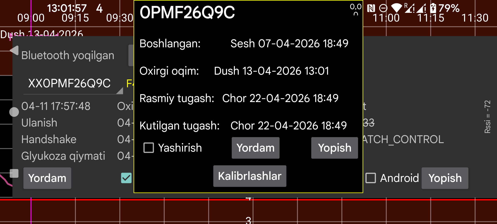

Sensorning boshlanish vaqti, oxirgi oqim, oxirgi skan hamda kutilgan va rasmiy tugash vaqtlarini ko‘rsatadi.
Qizish: Sibionics va Aidex X sensorlari uchun qizish davri necha daqiqa bo‘lishini o‘zgartirishingiz mumkin. Qizish davrida barcha funksiyalar ma’lumotni e’tiborsiz qoldiradi: ekrandagi egri chiziq, statistika, eksport qilingan ma’lumot va veb serverda ko‘rinadigan ma’lumot. Bu o‘tgan ma’lumotlarga ham tatbiq etiladi.
Yashirish: belgilansa egri chiziq yashiriladi. Belgini olib tashlashdan tashqari, ekranning past o‘ng burchagidagi Ko‘rsatish tugmasi bilan ham egri chiziqni qayta ko‘rsatish mumkin.
Kalibrlashlar: agar chap menyu→Sozlamalar→Kalibrlash bo‘limida qon glyukozasi yorlig‘ini tanlagan va chap o‘rta menyu→Yangi miqdor orqali chiqarib tashlanmagan qon glyukozasi o‘lchovlarini kiritgan bo‘lsangiz, Kalibrlashlar tugmasini bosib bajarilgan kalibrlashlar ro‘yxatini ko‘rishingiz mumkin. Qarab chiqing: kalibrlash haqida.
Faollashtirish: tugagan sensorlar uchun Faollashtirish tugmasi ko‘rsatiladi. Uni bosib sensordan paketdagi Data Matrix kodini yana skan qilmasdan yana foydalanish mumkin. Libre 2 va 3 sensorlari bilan ham ishlaydi, lekin sensori boshqa telefonda Juggluco bilan skan qilingan bo‘lsa, sensorni qaytarib olish uchun uni NFC orqali yana skan qilish kerak bo‘ladi.